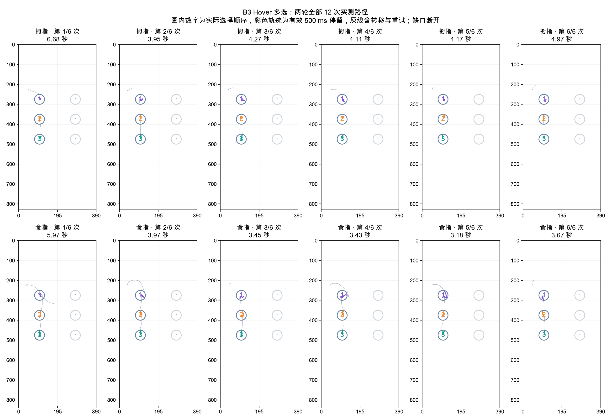

INTENTIONAL HOVER STUDY
Intentional
Hover Study
手机操作仿真中的悬停意图研究。原生 iPad 采集应用、真实阅读场景，以及从行动轨迹寻找意图线索的探索性分析。
14
任务类型
7 类自然基线、4 类主动 Hover、3 类混淆任务。姿势与任务可按需选择。
12 + 17
章节与分析图
指向、菜单后点击、多选、圈选、加减速、阅读候选和 home position。
V2.4
当前采集协议
156 次短任务＋3 段自然阅读。A/C 失败重试同题，B 各 12 次记录成功率。
这轮数据告诉我们什么
动作阶段和路径结构最清楚：菜单操作的两阶段、多对象间的移动与驻留、大面积闭合空中路径。低速、减速或停留 500ms 单独区分 intentional hover 的能力有限。
静态线索仍有误报
C3 回顾性检验识别 23/27 主动窗，却误报 20/69 自然候选。平衡准确率 78.1%。
位置热点需要重学
6 个姿势×场景热点中仅 3 个后半段复现。固定 home 过滤本轮没有改善 C3。
一位参与者，两轮均右手：先拇指、后食指；先后顺序及练习效应未分离。实测来自 V2.1，C 曾用于探索，结果不能视为独立验证。Z 为 API 原值，不能解释为毫米。

新增：阅读视线的正对照
三段阅读里，前摄估计视线与 Pencil Home 在记录坐标上分离；但校准 P90 为 211.9 pt，成功点击的 A1 目标也常被视线估计错过。当前不能把眼手同目标当作 intentional hover 的硬条件。看完整证据 →
在浏览器中重建自己的轨迹
Three.js 回放保留手机局部区域的 Pencil 悬停与接触，显示目标、选择、菜单、阅读状态与圈线。导入文件在浏览器内处理；公开页初始为空。